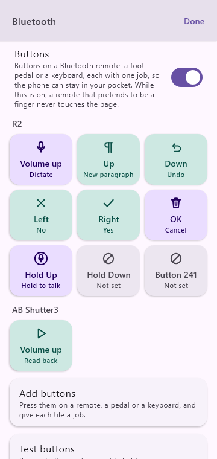
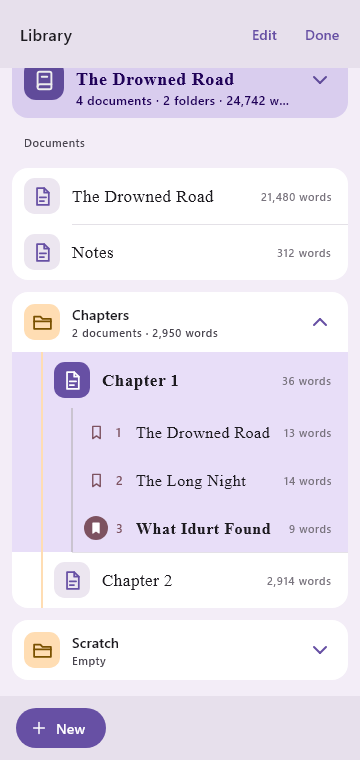
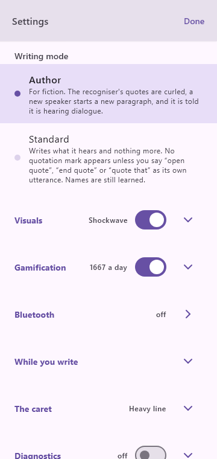

Wherever you are, talk
On a walk, behind the wheel, or lying in bed: hold the button, or click a remote, and say the scene. Sentences arrive whole, with their punctuation. A long pause becomes a paragraph.
AKnght2Write
Walking, driving, or lying in bed: say the next scene and AKnght2Write turns it into manuscript, with its paragraphs, dialogue and chapters. A short list of spoken commands makes the edits. Everything happens on the phone, and nothing is sent anywhere.
In development for Android, iPhone and desktop
An animated demonstration of AKnght2Write. The writer taps the paragraph button, holds Dictate and says a line of dialogue, and it lands on the page with curly quotation marks. They hold Command and say “replace water with river”, and the first sentence changes. Then the phone reads the chapter back.
How it goes
On a walk, behind the wheel, or lying in bed: hold the button, or click a remote, and say the scene. Sentences arrive whole, with their punctuation. A long pause becomes a paragraph.
Press play and hear the chapter read to you, sentence by sentence. The ear catches what the eye forgives.
Say replace water with river, or tap a paragraph and type. Whatever you change is one undo away.
On the device
Everything it does, it does on the phone itself. There is no account to make, no server to reach and nothing to upload. On Android, AKnght2Write does not even request permission to use the internet. It could not send your book anywhere if it wanted to.
Where your words go
The cast list
Ordinary dictation hears an invented name and writes the nearest real one. AKnght2Write keeps a cast list for each book and tells the recognizer what to listen for.
You do not have to fill it in first. Correct a name by hand once, and it offers to remember. The list builds itself out of ordinary writing, and each book keeps its own.
Our own measurement: the same recording through the same model, with the cast list off and then on. It was taken with synthesized voices reading a prepared passage, so treat it as the shape of the result rather than a promise about your voice.
Made for fiction
In Author mode, quotation marks come out curled and a new speaker starts a new paragraph. The recognizer decides what is dialogue from your tone of voice, and a flat reading can fool it. When it misses a line, say quote that and the last thing you said is wrapped in quotation marks.
Writing something that is not fiction? Standard mode writes what it hears and adds no quotation mark you did not ask for. The mode is remembered for each document.
You say
we should go now said Amyra
Calbert did not move before the light
On the page
“We should go now,” said Amyra.
Calbert did not move. “Before the light?”
Built to be trusted
Every utterance is written to the phone’s storage the moment you stop talking, and deleted only once its words are on the page. If the phone closes the app mid-sentence, the recording is still there, and it is written down the next time you open it.
And you never wait. Keep talking while the last sentence is still being worked out; everything lands in the order you said it.
What happens to a sentence
Interrupted anywhere along the way, it picks up from the saved recording at the next launch.
Eyes up
Pair a cheap Bluetooth camera remote, a ring or a foot pedal and give each button a job: dictate, new paragraph, undo, read back. Click to start, click again to send, double-click to throw a bad take away.
A buzz and a tone tell you it heard you, because no animation reaches a pocket. A Bluetooth headset can be the microphone.
A command it could not make out feels different: a heavier buzz and a falling tone, and nothing is written. Click the same button and say it again.

Yours to keep
A project is a folder. Its documents are Markdown files that open in anything, back up however you like, and sync with whatever you already use. On Android you choose the folder, and it outlives the app: uninstall, reinstall, point at the same folder, and every project is back.
When it is time to move to your word processor, Copy puts the whole manuscript on the clipboard and Send hands it to any app that takes text or a file.
On your phone’s storage
The Drowned Road/ ├─ The Drowned Road.md ├─ Notes.md ├─ Chapters/ │ ├─ Chapter 1.md │ └─ Chapter 2.md ├─ Scratch/ └─ TextReplacements.md cast list
Where was I?
Finding a spot by its words means hoping the recognizer hears the same phrase the same way twice. A number read off the page has no such problem. Say go to 5 and carry on from the end of sentence five.
The numbers start again with each chapter, so they stay short enough to say out loud. They are only drawn on the screen and are never part of your text.
Amyra went down to the water before the light came. The horses had been standing in the rain since the middle of the night. She did not speak to them.
Calbert had not slept. He watched the road from the gate, and said nothing to anyone who passed. The bell rang twice.
Voice commands
Hold Command and say what you want done. The list is short and fixed on purpose: nothing is guessing at what you meant, so the same words do the same thing every time.
If a command is not understood, nothing is changed and nothing is written. The app says so, marks the place, and keeps the recording so you can hear it. Say it again, write the words down after all, or toss them. Your words are never lost.
While you are dictating, the only commands that work are the ones that add something: a new paragraph, a new line, punctuation. Nothing that removes writing can be set off by a sentence of your story, and a sentence that merely contains “new paragraph” is just a sentence.
Say literally new paragraph and the words themselves are written down. It is the escape hatch for the day somebody in your book dictates a letter.
A closer look


New words land with a small flourish, so a glance tells you it heard. Pick from five (a shockwave, a comet, a stamp, a volley of dots, a drop) or none.
A quiet meter counts the day’s words toward a target you set. Undo a sentence and it counts back down, because it follows the manuscript, not your ego. Off with one switch.
Dialogue needs a new paragraph at every turn, and saying so each time is slow. The ¶ button does it instantly, with the same undo as the spoken command.
By design
There is no language model in AKnght2Write. “Tighten this paragraph” is out of scope on purpose. It writes down what you said; the prose stays yours.
Mishearing prose as a command could destroy writing, so nothing it does not recognize is ever acted on. A command it cannot make out leaves your page exactly as it was, and waits in the margin with its recording until you say it again, keep the words, or toss them.
No accounts, no usage statistics, no server of ours for anything. We could not tell you how many words you wrote yesterday, and we like it that way.
Plain files in your own folder, and export in one tap. Every document opens, types, reads back and exports whether you subscribe or not. The one thing a subscription adds is dictating in more than one of them.
Pricing
One documentto dictate in, for as long as you like
Monthly or yearlythrough Google Play or the App Store
Prices will be announced when the app reaches the stores. Without a subscription, pressing Dictate in any other document opens nothing and says so at once, with a buzz and a tone, so nothing you say is ever lost to a microphone that was not listening. A subscription renews until you cancel it in your store account; the terms say how.
Where it stands
AKnght2Write runs today on our own Android phone, iPhone and desktop, and we are working toward a release on Google Play and the App Store. If you would like to test it early, or just want to hear when it is out, write to us.
Questions
No. Recognition, read-back and editing all run on the device and keep working in airplane mode indefinitely. The only thing that ever uses a connection is the app store, to confirm a subscription if you have one.
Dictation in one document, for as long as you like, chapters and all. Past 2,000 dictated words in a week the app reminds you now and then that a subscription exists, and carries on listening. Typing, editing, read-back and export are free in every document.
Everything you wrote stays yours and stays open. Dictation goes back to your free document; the others you can still type in, listen to and export.
The listening is: speech is recognised on the phone itself, never on a server. The writing is not: there is no language model, nothing generates or “improves” your text, and commands are matched against a fixed list.
Nothing is written and nothing is changed, so there is nothing to undo. You feel a buzz and hear a falling tone, and a small mark appears in the margin where you gave the command. Say it again and it runs. Later, tap the mark to hear the recording, write the words down where you said them, or toss them. Anything too long to have been a command is simply written down, so a paragraph said with the wrong button still lands in your book.
English, for now.
Because everything it needs to understand you comes inside the app. The alternatives were a download on first run or sending your voice to a server, and we wanted neither.
On a Galaxy S21 Ultra, a sentence is on the page about a second and a half after you stop talking. You never wait for it, though: keep dictating while earlier sentences are being written down, and they land in the order you said them.
Hands-free dictation with a wake word is built and works in our testing, but it is not switched on in the phone app yet. Holding a button, or clicking a remote, is more dependable when you are on the move, so that came first.
Always. It is already plain Markdown in a folder; Copy puts the whole manuscript on the clipboard, and Send hands it to any app that takes text or a file. A draft edited elsewhere can be dropped back in.
Short, because there is little to say: the app collects nothing. Read it here.